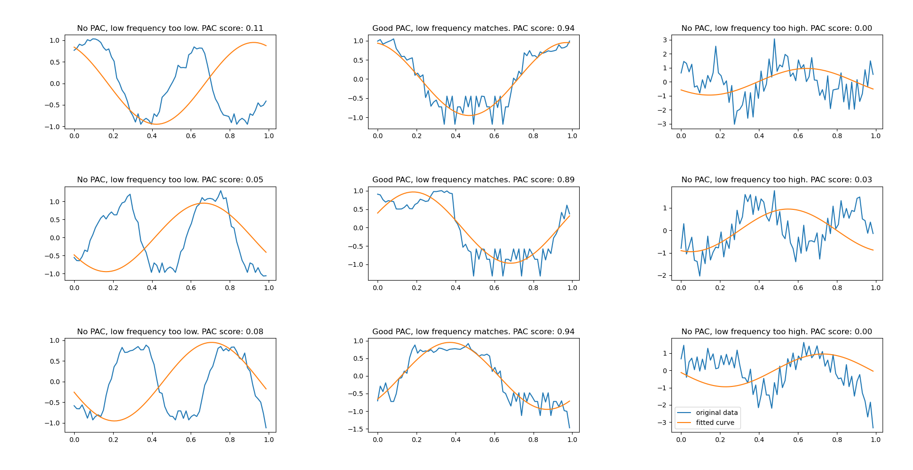

Direct Modulation Index#
- cfc.pac.run_dmi(low_freq_data, high_freq_data, phase_window_half_size=10, phase_step_width=1, max_model_fit_iterations=200)#
Calculates the direct modulation index between a low frequency signal and a high frequency signal. Instead of the original modulation index based on entropy, this modulation index estimate is based on a sinusoidal fit.
- Parameters:
low_freq_data – Single array of low frequency data.
high_freq_data – Single array of high frequency data. Must have the same length as low_freq_data.
phase_window_half_size – Width of the phase window used for calculation of frequency/phase histogram. Amplitude gets added to every phase bin within the window size. Larger windows result in more smooth, but also potentially increased PAC estimates.
phase_step_width – Step width of the phase window used for calculation of frequency/phase histogram.
max_model_fit_iterations – Maximum number of iterations applied during sine fitting.
- Returns:
Amount of phase amplitude coupling measured using the modulation index.
The following example shows how to apply the dmi to estimate PAC.
import numpy as np
import matplotlib
matplotlib.use("Qt5agg")
import matplotlib.pyplot as plt
import finn.cfc.pac as pac
def generate_high_frequency_signal(n, frequency_sampling, frequency_within_bursts, random_noise_strength,
offset, burst_count, burst_length):
signal = np.random.normal(0, 1, n) * random_noise_strength
for burst_start in np.arange(offset, n, n/burst_count):
burst_end = burst_start + (burst_length/2)
signal[int(burst_start):int(burst_end)] = np.sin(2 * np.pi * frequency_within_bursts * np.arange(0, (int(burst_end) - int(burst_start))) / frequency_sampling)
return signal
def visualize(scores, best_fits, amplitude_signals, frequencies_between_bursts, tgt_frequency_between_bursts, high_freq_frame_offsets):
if(len(scores) < 5):
(_, axes) = plt.subplots(2, 2)
elif(len(scores) < 10):
(_, axes) = plt.subplots(3, 3)
elif(len(scores) < 17):
(_, axes) = plt.subplots(4, 4)
elif(len(scores) < 26):
(_, axes) = plt.subplots(5, 5)
else:
raise NotImplementedError
axes = np.reshape(axes, -1)
for (ax_idx, ax) in enumerate(axes):
ax.plot(np.arange(0, 1, 1/len(amplitude_signals[ax_idx])), amplitude_signals[ax_idx], label = "original data")
ax.plot(np.arange(0, 1, 1/len(amplitude_signals[ax_idx])), best_fits[ax_idx], label = "fitted curve")
if (frequencies_between_bursts[int(ax_idx % len(high_freq_frame_offsets))] < tgt_frequency_between_bursts):
ax.set_title("No PAC, low frequency too low. PAC score: %2.2f" % (scores[ax_idx],))
elif (frequencies_between_bursts[int(ax_idx % len(high_freq_frame_offsets))] > tgt_frequency_between_bursts):
ax.set_title("No PAC, low frequency too high. PAC score: %2.2f" % (scores[ax_idx],))
else:
ax.set_title("Good PAC, low frequency matches. PAC score: %2.2f" % (scores[ax_idx],))
def main():
#Configure sample data
data_range = np.arange(0, 10000)
frequency_sampling = 1000
frequencies_between_bursts = [5, 10, 15]
tgt_frequency_between_bursts = 10
frequency_within_bursts = 200
high_freq_frame_offsets = [0, 20, 40]
#Configure noise data
random_noise_strength = 1
#Generate sample data
burst_length = frequency_sampling / tgt_frequency_between_bursts
burst_count = len(data_range) / frequency_sampling * tgt_frequency_between_bursts
high_freq_signals = [generate_high_frequency_signal(len(data_range), frequency_sampling, frequency_within_bursts,
random_noise_strength, high_freq_frame_offset, burst_count, burst_length) for high_freq_frame_offset in high_freq_frame_offsets]
low_freq_signals = [np.sin(2 * np.pi * frequency_between_bursts * data_range / frequency_sampling) for frequency_between_bursts in frequencies_between_bursts]
scores = list(); best_fits = list(); amplitude_signals = list()
for high_freq_signal in high_freq_signals:
for low_freq_signal in low_freq_signals:
tmp = pac.run_dmi(low_freq_signal, high_freq_signal, phase_window_half_size = 20, phase_step_width = 5)
scores.append(tmp[0]); best_fits.append(tmp[1]); amplitude_signals.append(tmp[2])
#visualization
visualize(scores, best_fits, amplitude_signals, frequencies_between_bursts, tgt_frequency_between_bursts, high_freq_frame_offsets)
plt.tight_layout()
plt.legend()
figManager = plt.get_current_fig_manager()
figManager.window.showMaximized()
plt.show(block = True)
main()
Using the direct modulation index, PAC has been detected only where there was a match between the high frequency component and the low frequency component:
